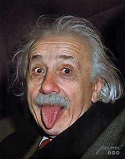

ABOUT ME
Born: 14 March 1879
Education: ETH Zurich (Dip,1900),
University of Zurich(PhD,1905)
Known for: General Relativity
Special Relativity
E=mc^2
It was March 14, 1879. I was born in the small city of Ulm, Germany.
Dad, Hermann, worked with electrical equipment. Mom, Pauline, loved music and was a talented pianist.
Little sister and lifelong friend, Maja, was two years younger.
Best known for developing the theory of relativity, made important contributions to quantum
mechanics, and was thus a central figure in the revolutionary reshaping of the scientific
understanding of nature that modern physics accomplished in the first decades of the twentieth
century.
Mass–energy equivalence formula E = mc2, which arises from relativity theory, has been called
"The
world's most famous equation".
He received the 1921 Nobel Prize in Physics "for his services to theoretical physics, and especially
for his discovery of the law of the photoelectric effect",a pivotal step in the development of
quantum theory.
My work is also known for its influence on the philosophy of science.
In a 1999 poll of 130 leading physicists worldwide by the British journal Physics World, I was
ranked the greatest physicist of all time.
 The theory of relativity
The theory of relativity


.png)